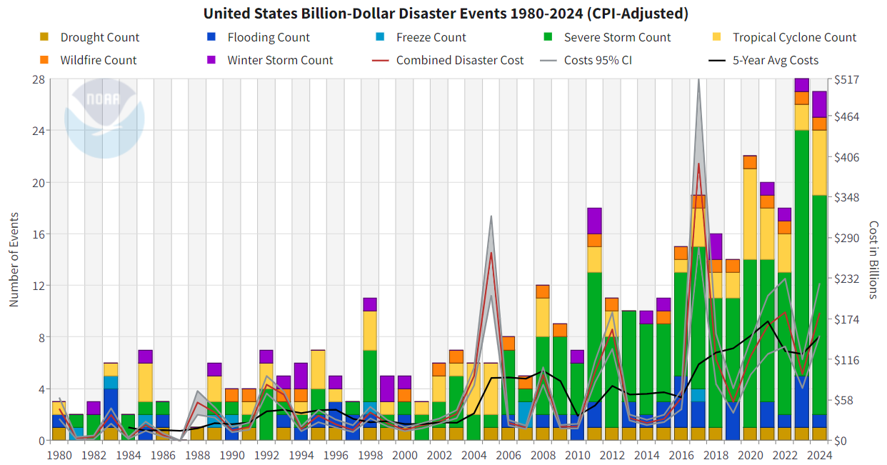

library(tidyverse)
library(janitor)
# load other packages as you see fit but remember to add comments to explain what each package doesHomework 2
Before your start the assignment
- Update the header - put your name in the
authorargument and put today’s date in thedateargument. - Click the “Render” button in RStudio and then open the rendered
2-hw2.htmlpage. - Then go back and try changing the
themeargument in the header to something else - you can see other available themes here. Notice the difference when you render now!
Overview of HW2
Create a data visualization that helps answer the question:
How have the number and cost of billion-dollar disasters in the US changed over time?
You will use the NOAA Billion-Dollar Disaster dataset to explore how visual encoding choices (e.g., color, position, length) help communicate trends clearly and effectively.
Skills practiced:
- Downloading and importing real-world data from a public source (NOAA)
- Wrangle and explore a real-world dataset using tidyverse
- Identify appropriate visual encodings based on variable types and goals
- Create a clear and effective time-series visualization with ggplot2
- Apply design principles (titles, colors, themes, alt text) for accessibility and clarity
Load Required Packages
Q1: Prepare the data
Following these steps to download and read in the dataset:
Download the dataset from NOAA. Under “Access” tab, choose the HTTPS option to download the data. Scroll to the bottom of the list to download the most recent published version. Read more about the dataset here.
Place the downloaded CSV file
events-US-1980-2024-Q4.csvinto yourdata/folder in your HW repository. You will notice there is a graph that comes with the data, we will circle back to it later.Add your data/ folder to .gitignore to avoid pushing data to GitHub.
Read in the CSV file using
read_csv()
# remove the eval=FALSE when you render quarto document
df_disasters <- read_csv("data/events-US-1980-2024-Q4.csv", skip = 2) |>
janitor::clean_names()
# the skip argument is used to skip the first two rows of the CSV file, which contain metadata about the dataset.- Skim through the dataset to get familiar with the variable names, especially:
disaster: the type of disaster (e.g., flood, drought, etc.)begin_date: the date when the disaster beganend_date: the date when the disaster endedcpi_adjusted_cost: the total damages caused by the disaster (in billions of dollars)deaths: the number of deaths caused by the disaster
- Create a new column
yearthat extracts the year from thebegin_datecolumn. You can use thelubridatepackage to do this.
# remove the eval=FALSE when you render quarto document
df_disasters <- df_disasters |>
mutate(year = lubridate::year(ymd(begin_date)))- Explore the dataset and answer these questions:
- Are there any missing or zero values in the cost or deaths columns? How might they affect your visualizations?
- What are the top 5 most common disaster types?
- Calculate the total CPI-adjusted cost of disasters per year. Identify the top 3 most expensive years.
#your code here
NoteYour Answer
- Missing data:
- 5 most disaster types:
- 3 most expensive years by CPI-adjusted cost:
Q2: Build your visualization
Create a data visualization that summarizes trends over time (year or decade) in the frequency and/or cost of disasters.
Your final visualization should:
Use data from 1980 to 2024 only
Include a title (short, descriptive), subtitle (main takeaway), caption (e.g., “Data: NOAA Billion-Dollar Disasters (accessed 2026)”)
Apply strategies for highlighting patterns or trends (e.g., highlighting recent years, distinguishing types of disasters)
Use custom colors rather than ggplot defaults
Use a clean, polished theme
Include at least one theme adjustments (e.g., axis labels, legend position, font size) to improve readability/visual appeal
#your code hereWhat do you notice about the trends over time in the frequency and/or cost of disasters? Anything unexpected?
NoteYour Answer
Type your response here.
Q3: Reflection
- What are your variables of interest and what kinds of data (e.g., numeric, categorical, ordered, etc.) are they?
NoteYour Answer
Type your response here.
- How did you decide which type of graphic form was best suited for answering the question? What alternative graphic forms could you have used instead? Why did you settle on this particular form?
NoteYour Answer
Type your response here.
- What modifications did you make to this viz to improve readability and accessibility?
NoteYour Answer
Type your response here.
- Is there anything you wanted to implement but didn’t know how? If so, describe it.
NoteYour Answer
Type your response here.
Q4: Critique the original graph from NOAA

This plot appears on NOAA’s official Billion-Dollar Disaster website and summarizes annual disaster frequency and cost.
- Describe the graphic
- What type(s) of chart(s) are used?
- What variables are encoded? How are they mapped to visual channels (e.g., position, color, size)?
- What is the intended takeaway?
NoteYour Answer
Type your response here.
- Assess strengths
- What aspects of the chart help communicate the intended message clearly?
- Is there anything done particularly well in terms of accessibility, color use, or labeling?
NoteYour Answer
Type your response here.
- Assess limitations
- What elements of the chart are confusing, cluttered, or potentially misleading?
- Are any visual encodings hard to interpret?
- Does the chart overcomplicate the message or try to show too much?
NoteYour Answer
Type your response here.
- Recommend improvements
- Suggest 2–3 specific changes that would improve the effectiveness of the chart.
- Would you consider separating out the lines from the stacked bars? Using interactivity? Changing the layout?
NoteYour Answer
Type your response here.
BONUS: Create an alternative data visualization from the dataset
- Use the from Data to Viz tool here to help determine graph types you can use that are different from what you have implemented above
- Create a new visualization that uses a different type of graph than the one you created in Q2.
#your code here
NoteYour Reflection
Type your reflection here.